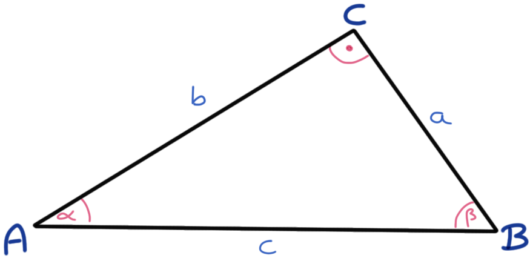

4 Flächenberechung
Letzte Änderung am 01. November 2023 um 11:14:57
Im Folgenden wollen wir einmal die Flächen (\(F\) oder auch \(A\)) und die Umfänge \(U\) von geometrischen Objekten bestimmen. Wir gehen hierfür die gängigsten geometrischen Formen einmal durch. Du musst dir dann raussuchen, was zu deiner Fragestellung dann am besten passt.
4.1 Quadrat
Im Folgenden sehen wir die Abbildung eines Quadrats.

Wir berechnen die Fläche \(F\) eines Quadrats mir folgender Formel.
\[ F = a \cdot a = a^2 \]
Den Umfang eines Quadrats \(U\) können wir dann wie folgt berechnen.
\[ U = 4 \cdot a \]
Die Diagonale \(d\) eines Quadrates ergibt sich dann wie folgt.
\[ d = a \sqrt{2} = \sqrt{2\cdot a ^2} \]
4.2 Rechteck
Das Rechteck ist ja ein Quadrat wo jemand gegengetreten hat. Eigentlich tritt ja das Quadrat nie so in der reinen Form auf, eigentlich haben wir immer Rechtecke vorliegen. Selten sind Tische oder Stallbuchten quadratisch.

Beachte auch folgenden Zusammenhang für das Rechteck:
\[ a = \cfrac{F}{b} = \cfrac{U - 2b}{2} \]
\[ b = \cfrac{F}{a} = \cfrac{U - 2a}{2} \]
Wir berechnen die Fläche \(F\) eines Rechtecks mir folgender Formel.
\[ F = a \cdot b \]
Den Umfang eines Rechtecks \(U\) können wir dann wie folgt berechnen.
\[ U = 2 \cdot a + 2 \cdot b = a (a+b) \]
Die Diagonale \(d\) eines Rechtecks ergibt sich dann wie folgt.
\[ d = \sqrt{a^2 + b^2} \]
4.3 Trapez
Das Trapez ist ein Rechteck mit definitiv unterschiedlich langen Zeiten bzw. so unterschiedlich langen Seiten, dass wir nicht mehr von einem Rechteck ausgehen können. Viele Felder folgen einem Trapez oder einem Rechteck.

Beachte auch folgenden Zusammenhang für das Trapez:
\[ a = \cfrac{2F}{h}-b \]
\[ b = \cfrac{2F}{h}-a \]
\[ c = U - (a+b+d) \]
\[ d = U - (a+b+c) \]
Wir berechnen die Fläche \(F\) eines Trapez mir folgender Formel.
\[ F = m \cdot h = \cfrac{a+b}{2}\cdot h \]
Den Umfang eines Trapez \(U\) können wir dann wie folgt berechnen.
\[ U = a+b+c+d \]
4.4 Parallelogramm
Ein Parallelogramm ist ein gekipptes Rechteck. Auch hier haben wir die Anwendung eher auf landwirtschaftlichen Versuchsfeldern.

Beachte auch folgenden Zusammenhang für das Parallelogramm:
\[ a = \cfrac{2F}{h} \]
\[ b = \cfrac{U-2a}{2} \]
Wir berechnen die Fläche \(F\) eines Parallelogramms mir folgender Formel.
\[ F = a \cdot h \]
Den Umfang eines Trapez \(U\) können wir dann wie folgt berechnen.
\[ U = 2(a+b) \]
Die Diagonale \(e\) ist durch folgende Formel gegeben. Wir benötigen die Strecke \(e\) bei der Berechnung eines Kräfteparallelogramms.
\[ e = \sqrt{a^2 + b^2 - 2ab \cdot \cos(\beta)} \] \[ e = \sqrt{a^2 + b^2 + 2ab \cdot \cos(\alpha)} \]
4.5 Dreieck
Auch hier kommt es dann auf die Anwendung an. Teilendstücke können einem Dreick folgen. Sonst kommt das Dreick dann doch eher seltener vor.

Wir berechnen die Fläche \(F\) eines Dreiecks mir folgender Formel.
\[ F = \cfrac{a \cdot h_a}{2} \]
Den Umfang eines Dreiecks \(U\) können wir dann wie folgt berechnen.
\[ U = a + b + c \]
Die Höhe des Dreiecks an der Seite \(h_a\) lässt sich dann wie folgt ausrechnen.
\[ h_a = \cfrac{2 \cdot F}{a} \]
Wenn wir Glück haben, dann haben wir ein Dreieck mit einem rechten Winkel vorliegen, dann rechnen sich einige der Seiten etwas anders.

Bei einem rechtwinkligen Dreieck gilt dann folgender sehr bekannter Zusammenhang.
\[ a^2 + b^2 = c^2 \]
Daraus ergeben sich dann auch folgende Umformungen.
\[ \begin{aligned} a^2 &= c^2 - b^2\\ b^2 &= c^2 - a^2\\ c^2 &= a^2 + b^2\\ h^2 &= b^2 - q^2\\ h^2 &= a^2 - p^2 \end{aligned} \] Im Weiteren wollen wir uns nochmal die Winkel ein einem rechtwinkligen Dreieck anschauen und wie dort die Seitenlängen mit den Winkeln zusammenhängen.

In unserem Fall liegt der rechte Winkel bei der Ecke C, somit berechnet sich die gegenüberliegende Seite \(c\) nach folgenden Formeln. Erst einmal mit der Betrachtung des Winkels \(\alpha\).
Wir immer gibt es auch auf Wikipedia eine gute Übersicht über das rechtwinklige Dreieck.
\[ c = \cfrac{a}{\sin(\alpha)} = \cfrac{b}{\cos(\alpha)} \]
Sowie im Weiteren nach der Formel, wenn wir den Winkel \(\beta\) betrachten.
\[ c = \cfrac{b}{\sin(\beta)} = \cfrac{a}{\cos(\beta)} \]
Wenn wir uns die Katheten \(a\) und \(b\) berechnen wollen, dann gelten die folgenden Formeln für die Kathete \(a\). \[ a = c \cdot \sin (\alpha) = c \cdot \cos (\beta),\\ a = b \cdot \tan (\alpha) = b \cdot \cot (\beta) \]
Die Kathete \(b\) können wir dann ebenfalls berechnen.
\[ b = c \cdot \cos (\alpha) = c \cdot \sin (\beta),\\ b = a \cdot \cot (\alpha) = a \cdot \tan (\beta) \] Für ein beliebiges Dreieck mit unterschiedlichen Winkeln gibt es eine Menge an Berechnungsmöglichkeiten. Hier bietet dann wieder die Wikipedia eine Übersicht über alle Kongruenzsätze eines Dreiecks. Ich werde hier nicht nochmal die Wikipedia kopieren sondern dann in den entsprechenden Inhalten auf die Sätze eingehen.
Hier nochmal in einem rechtwinkeligen Dreieck die Winkelzusammenhänge für den Winkel \(\alpha\). Du musst dann für den Winkel \(\beta\) eben die Seiten entsprechend der Katheten und Hypotenuse anpassen.
\[ \tan(\alpha) = \cfrac{a}{b} = \cfrac{Gegenkathete}{Ankathete} \] \[ \sin(\alpha) = \cfrac{a}{c} = \cfrac{Gegenkathete}{Hypotenuse} \]
\[ \cos(\alpha) = \cfrac{b}{c} = \cfrac{Ankathete}{Hypotenuse} \]
4.6 Kreis
Zum Abschlus schauen wir uns nochmal den Kreis an. Hier kommt natürlich dann die Kreiszahl \(\pi\) mit \(3.14\) zum Einsatz.

Wir berechnen die Fläche \(F\) eines Kreises mir folgender Formel.
\[ F = r^2 \cdot \pi = \cfrac{d^2 \cdot \pi}{4} \]
Den Umfang eines Kreises \(U\) können wir dann wie folgt berechnen.
\[ U = 2r \cdot \pi = \cfrac{d \cdot \pi}{4 \cdot F} \] Die Diagonale \(d\) eines Kreises ergibt sich dann wie folgt.
\[ d = 2r \]
Und der Radius \(r\) hängt dann wie folgt um Umfang \(U\) ab.
\[ r = \cfrac{U}{2 \cdot \pi} \]